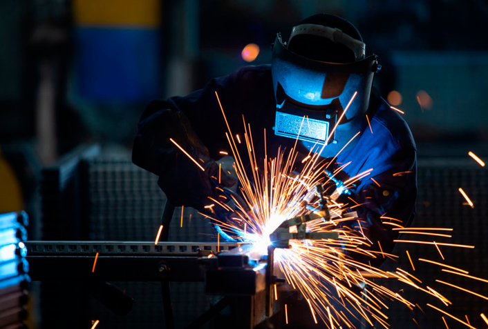
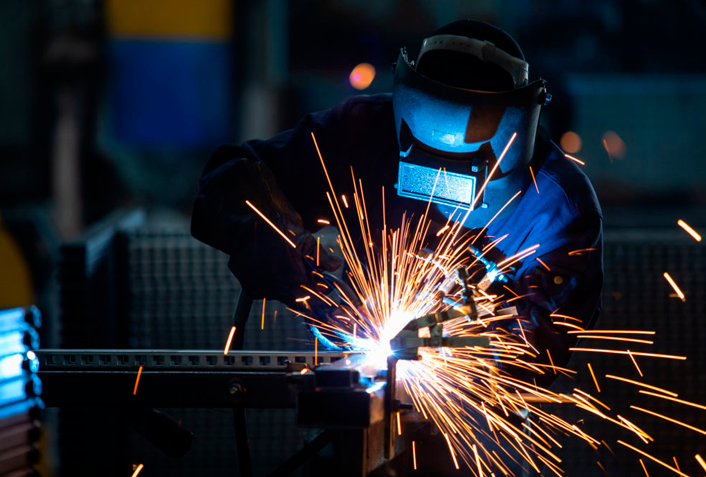

¿Que es la soldadura?
- La soldadura es un proceso de fijación en el cual se realiza la unión de dos o más piezas de un material
(generalmente metales o termoplásticos), usualmente logrado a través de la coalescencia (fusión),
en la cual las piezas son soldadas fundiendo, se puede agregar un material de aporte (metal o plástico), que, al fundirse,
forma un charco de material fundido entre las piezas a soldar (el baño de soldadura) y,
al enfriarse, se convierte en una unión fija a la que se le denomina cordón.
A veces se utiliza conjuntamente presión y calor, o solo presión por sí misma, para producir la soldadura. Esto está en contraste con la soldadura blanda (en inglés soldering) y la soldadura fuerte (en inglés brazing), que implican el derretimiento de un material de bajo punto de fusión entre piezas de trabajo para formar un enlace entre ellos, sin fundir las piezas de trabajo. Muchas fuentes de energía diferentes pueden ser usadas para la soldadura, incluyendo una llama de gas, un arco eléctrico, un láser, un rayo de electrones, procesos de fricción o ultrasonido. La energía necesaria para formar la unión entre dos piezas de metal generalmente proviene de un arco eléctrico.
La energía para soldaduras de fusión o termoplásticos generalmente proviene del contacto directo con una herramienta o un gas caliente.
La soldadura con frecuencia se realiza en un ambiente industrial, pero puede realizarse en muchos lugares diferentes, incluyendo al aire libre, bajo del agua y en el espacio. Independientemente de la localización, sin embargo, la soldadura sigue siendo peligrosa,
y se deben tomar precauciones para evitar quemaduras, descarga eléctrica, humos venenosos, y la sobreexposición a la luz ultravioleta.
Hasta el final del siglo XIX, el único proceso de soldadura era la soldadura de fragua, que los herreros han usado por siglos para juntar metales calentándolos y golpeándolos. La soldadura por arco y la soldadura a gas estaban entre los primeros procesos en desarrollarse tardíamente en ese mismo siglo, siguiéndoles, poco después, la soldadura por resistencia y soldadura eléctrica. La tecnología de la soldadura avanzó rápidamente durante el principio del siglo XX mientras que la Primera Guerra Mundial y la Segunda Guerra Mundial condujeron la demanda de métodos de unión fiables y baratos. Después de las guerras, fueron desarrolladas varias técnicas modernas de soldadura, incluyendo métodos manuales como la Soldadura manual de metal por arco, ahora uno de los más populares métodos de soldadura, así como procesos semiautomáticos y automáticos tales como Soldadura GMAW, soldadura de arco sumergido, soldadura de arco con núcleo de fundente y soldadura por electroescoria. Los progresos continuaron con la invención de la soldadura por rayo láser y la soldadura con rayo de electrones a mediados del siglo XX. Hoy en día, la ciencia continúa avanzando. La misma es cada vez más corriente en las instalaciones industriales, y los investigadores
continúan desarrollando nuevos métodos de soldadura y ganando mayor comprensión de la calidad y las propiedades de la soldadura.
Se dice que la soldadura es un sistema porque intervienen los elementos propios de este, es decir, las 5 M: mano de obra, materiales,
máquinas, medio ambiente y medios escritos (procedimientos). La unión satisfactoria implica que debe pasar las pruebas mecánicas (tensión y doblez). Las técnicas son los diferentes procesos (SMAW, SAW, GTAW, etc.) utilizados para la situación más conveniente y favorable, lo que hace que sea lo más económico, sin dejar de lado la seguridad.